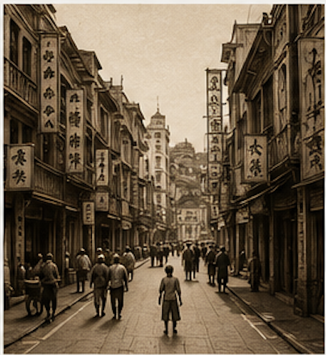
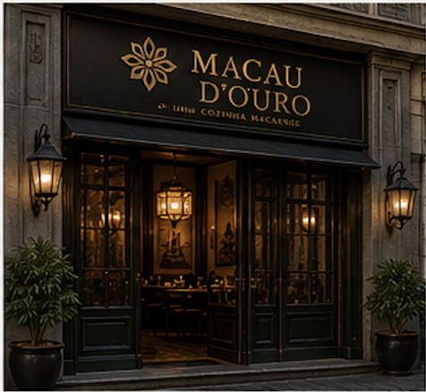

A Nossa História
Há histórias que atravessam oceanos. A nossa nasceu da ligação entre Portugal e Macau e continua hoje no coração do Porto.

Uma ligação que atravessa séculos.
Durante mais de quatro séculos, Portugal e Macau partilharam uma relação única que influenciou culturas, tradições e gastronomia.
Da mistura entre receitas portuguesas, ingredientes asiáticos e especiarias vindas de vários continentes nasceu a cozinha macaense, considerada uma das cozinhas de fusão mais antigas do mundo.
Hoje, o Macau d'Ouro procura preservar essa herança, apresentando pratos tradicionais num ambiente moderno e elegante.
A viagem até ao Macau d'Ouro
1513
Os portugueses chegam ao sul da China.
1557
Portugal estabelece-se em Macau.
1999
Macau regressa à China, mantendo viva a sua identidade cultural.
2026
Abre o Macau d'Ouro, no coração do Porto.

Como nasceu o Macau d'Ouro?
Em 2026, o chef português Miguel Almeida e a chef macaense Ana Lei decidiram unir as suas experiências e criar um restaurante diferente.
O objetivo era simples: mostrar que a gastronomia consegue unir culturas, contar histórias e criar memórias.
Inspirados pela ligação entre Portugal e Macau, escolheram o Porto para dar vida ao Macau d'Ouro, um espaço onde tradição, elegância e hospitalidade convivem diariamente.
Os nossos valores
🍜
Autenticidade
Receitas inspiradas na tradição macaense.
🇵🇹
Portugal
Ingredientes nacionais cuidadosamente selecionados.
🏮
Macau
Respeito pela cultura e tradição oriental.
❤️
Hospitalidade
Cada cliente é recebido como um convidado especial.

Uma ligação que continua viva.
A distância entre Portugal e Macau mede-se em milhares de quilómetros, mas a gastronomia aproxima culturas, pessoas e histórias.
Cada prato servido no Macau d'Ouro representa essa ligação histórica e cultural que atravessou oceanos e chegou ao Porto.
"Cada receita guarda uma memória. Cada refeição cria uma nova história."
Venha fazer parte da nossa história.
Descubra os sabores que unem Portugal e Macau numa experiência única no Porto.
Reservar Mesa